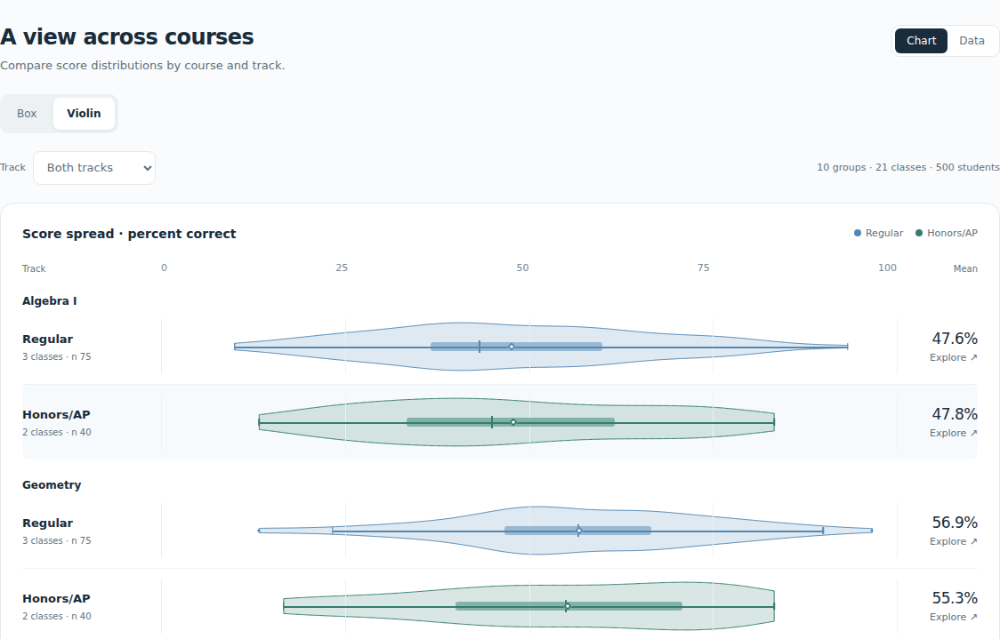

Assessment Intelligence
Assessment Analytics
Compare course distributions, class results, and content areas in the interactive math program report.
500 synthetic students. 21 classes. One assessment.
Interactive work
Assessment analytics, education data, and source-grounded reporting.

Assessment Intelligence
Compare course distributions, class results, and content areas in the interactive math program report.
500 synthetic students. 21 classes. One assessment.
Synthetic data
Ask questions of a synthetic education warehouse and inspect the resulting tables and charts.
Read-only analysis. No real student records.
Retrieval and reporting
Explore a content-processing workflow through answers grounded in cited, public-safe records.
A separate corpus from the education data lab.